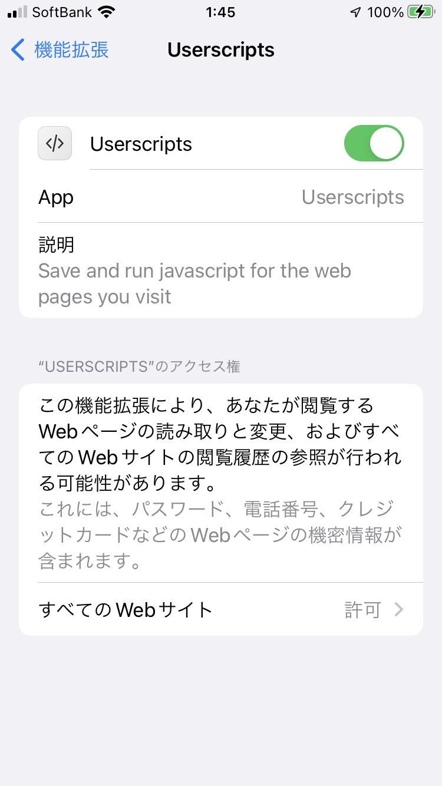
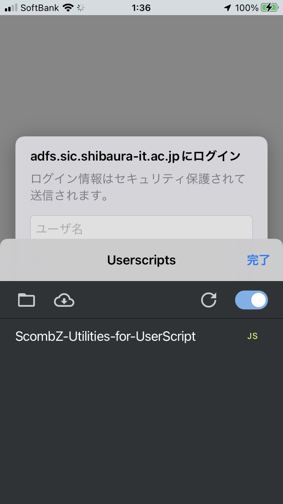

目次
- iPhone/iPad Orion版インストール方法 ＜iOSにｵｽｽﾒ!＞
- iPhone/iPad Safari版インストール方法
- Android Kiwi版インストール方法＜Androidにｵｽｽﾒ!＞
- 設定方法
Orion版インストール方法
※このガイドはiPhone/iPad用です。
0. Orionブラウザについて
MacOS, iOS, iPadOS向けに開発中である多機能ブラウザ、「Orion」をご存知ですか？
OrionはSafariよりも軽量で、FireFoxおよびChromeの拡張機能がどちらもインストールできる優れたブラウザです。
現在正式版は出ておらずベータテスト中ではありますが、導入は簡単です。
以下の手順でScombZ Utilities ORION版のインストールを進めましょう。
1. Orionのインストール
Orionは現在ベータテスト中であるため、通常のApp Storeでは公開されていません。
ベータテストに参加するには、TestFlightのインストールが必要です。
TestFlightとは、Apple公式アプリであり、AppおよびApp Clipのベータ版をテストするためのツールです。詳細
このリンクか、以下のQRコードからTestFlightをインストールしましょう！
AppStoreで「TestFlight」で検索しても出てきます。
2. Orionのインストール
TestFlightのインストールが完了したら、ブラウザ本体であるOrionのインストールに移ります。このリンクか、以下のQRコードを読み込んで、Orionベータテストに参加しましょう！
3. ScombZ Utilities(Orion版)のインストール
いよいよ拡張機能本体のインストールです。Orionブラウザで、このリンク、もしくは以下のQRコードを開いてください！
「Add to Orion」をタップして、インストール完了です！！！
Safari版インストール方法
※このガイドはiPhone/iPad用です。iOS15以上である必要があります。
0. Safariブラウザについて
iOS/iPadOSの標準ブラウザであるSafariは、iOS15以降から拡張機能に正式対応しました！
Safari拡張機能であるUserscripts Appを使って、ScombZ Utilitiesをインストールしましょう！
1. UserScriptのインストール
Safari拡張機能の一つである、Userscripts Appを使うことで、ユーザー任意のスクリプトをSafari上で動かすことができます。
まずは、Userscripts Appのインストールが必要です。
このリンクか、以下のQRコードからUserscripts Appをインストールしましょう！
AppStoreで「UserScripts」で検索しても出てきます。
2. Userscriptsの設定
以下の手順を参考にして、Userscriptsの設定を行ってください。
① Userscripts Appを開き、「Set Userscripts Directory」を押します。
② 「このiPhone内」を選択し、右上のボタンからフォルダを追加します。フォルダ名は「userscript」にします。
③ 今作った「userscript」フォルダを選択し、「完了」を押します。
④ 「設定」アプリを開き、「Safari」→「拡張機能」→「Userscripts」の順に進みます。以下のような画面になります。

画像を参考に、Userscriptsをオン、すべてのWebサイトを「許可」に設定してください。
⑤以上でUserscripts Appでの設定は完了です。
3. ScombZ Utilities(UserScript版)のインストール、設定
① 現在ご覧になっているこのページをSafariで開き、以下のリンクを長押しします。
画像のようになったら、「リンク先のファイルをダウンロード」を押して、ダウンロードしてください。
② 「ファイル」アプリを開きます。「ダウンロード」フォルダ内に先ほどダウンロードした「scombz-utilities.user.js」があるので、それを「2. Userscriptsの設定」で作成した「userscript」フォルダ内に移動、もしくはコピーしてください。
4. 動作確認
一度Safariをタスクキルし、再起動します。ScombZを開きます。下部のURL欄の左にジグソーパズルのようなアイコンが表示されていることを確認してください。
ジグソーパズルアイコンをタップし、Userscriptsをタップします。画像のように「ScombZ-Utilities-for-UserScript」が表示されていれば、インストール成功です。
※iOSの仕様により、しばらくすると拡張機能を読み込まなくなることがあります。その際は、同じ手順で再設定してください。

Kiwi版インストール方法
※このガイドはAndroid用です。
0. Kiwiブラウザについて
Android向け多機能ブラウザ、「Kiwi」をご存知ですか？
KiwiはPC向けのChrome拡張機能をAndroid上で動作させることができる優れたブラウザです。
開発期間も長く、安定しています。
以下の手順でAndroid端末へのScombZ Utilitiesのインストールを進めましょう。
1. Kiwiのインストール
まずは、Kiwi Browserのインストールが必要です。
このリンクか、以下のQRコードからKiwiをインストールしましょう！
Playストアで「Kiwi」で検索しても出てきます。
2. ScombZ Utilitiesのインストール
このリンクか、以下のQRコードをkiwiで開き、ScombZ utilitiesをインストールしましょう！
以上でインストール完了です。